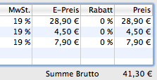
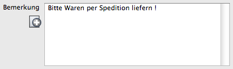
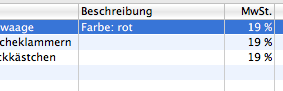
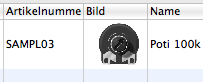
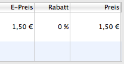
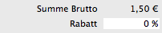
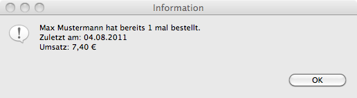

Legt fest, ob die Preise in der Artikelliste der Dokumente (Rechnungen, Lieferscheine ..) als Netto oder Brutto angezeigt werden
Wird ein Dokument dupliziert (wird zum Beispiel aus einer Bestellung eine Rechnung erzeugt), so werden Adresse und Artikel übernommen. Es ist möglich, den Kommentartext ebenfalls zu übernehmen oder beim duplizierten Dokument leer zu lassen.
Der Kommentar einer Bestellung ist derjenige, den der Kunde bei seiner Bestellung im Webshop eingegeben hat. Es ist nicht immer sinnvoll, diesen Text auch auf die Rechnung weiter zu geben. Der Text dort ist vielmals eine Information an den Kunden.
In den Dokumenten kann ein neuer Artikel über den Produktauswahl-Dialog eingefügt werden. Diese Einstellung legt fest, ob die Produktbeschreibung mit übernommen wird. Oftmals ist die Produktbeschreibung ein längerer Text und nicht geeignet für die Artikelliste eines Dokumentes. Ist diese Option nicht ausgewählt bleibt das Feld 'Beschreibung' der Artikelliste leer und kann mit zusätzlicher Information wie 'Farbe: rot' versehen werden.
Siehe auch Dokumenteneditor
Im Dokumenteneditor wird eine zusätzliche Spalte mit dem Produktbild eingefügt.
Siehe auch Dokumenteneditor
Die Spalte POS in der Artikelliste wird ein- oder ausgeblendet.
Die Spalte Rabatt in der Artikelliste wird ein- oder ausgeblendet.
Die Zeile Rabatt auf alle Artikel wird ein- oder ausgeblendet.
Im Dokumenteneditor für Lieferscheine können die Artikelpreise ein- oder ausgeblendet werden. Unabhängig davon, ob sie später gedruckt werden oder nicht.
Werden alle Produkte eines Lieferscheins importiert, kann zusätzlich die Lieferscheinnummer in das Textfeld Bemerkung übernommen werden.
Ist diese Einstellung aktiv, wird beim Öffnen einer Bestellung geprüft, ob der Kunde in der Vergangenheit bereits bestellt hat. Umsatz und Anzahl der bezahlten Rechnungen werden in einem Dialog angezeigt.
Legt fest, welche Dokumente beim Überprüfen eines Stammkunden verwendet werden.
Im Dokumenteneditor können bis zu 3 Felder für Bemerkungen eingeblendet werden.
Siehe auch Platzhalter Feld "Bemerkung"